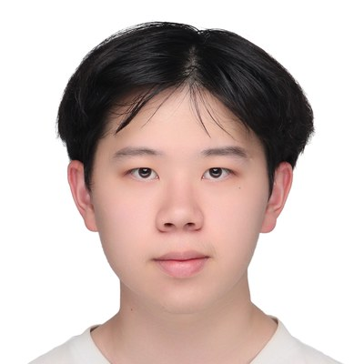
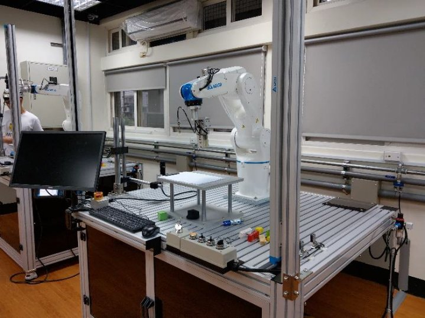

Shiuan-Chi Ding
Control Systems · Robotics · Embedded Systems
B.S. in Mechanical Engineering, National Central University · Taoyuan, Taiwan
About
I graduated from National Central University, Taiwan, with a B.S. in Mechanical Engineering in June 2026. I work on control systems for robots and vehicles, and I test them on hardware, not only in simulation. My projects include an adaptive flight controller for a transformable UAV, a TVC gimbal for a rocket-drone testbed, vision-guided positioning of a robotic arm to ±10 µm, and visual SLAM on a mobile robot. I also build the embedded side, from STM32 firmware to FPGA interfaces.
In graduate school, I want to study dynamic modeling, state estimation and nonlinear control, so that a controller stays stable when a robot meets conditions its model did not expect.
Education
B.S. in Mechanical Engineering (Opto-Mechatronics Engineering Program)
GPA: 3.74/4.3 (Overall), 3.82/4.3 (Major), 3.92/4.3 (Last 60 credits)
Experience
Co-advised by Profs. Y.-T. Lin, P.-C. Tung and C.-K. Lin · NSTC-funded
Set the development roadmap for a 4-person team; designed the transformable mechanism, all test rigs and the FPGA interfaces.
Rocket Structure & Avionics Group · Intern, then Project Member
Designed a two-axis TVC gimbal for the MINI4 rocket-drone testbed and derived its servo-to-gimbal mapping for the attitude controller.
Advisor: Prof. Y.-T. Lin · Industry collaboration with Lioho Machine Works, Ltd.
Built a CAN data-acquisition system and characterized the hydraulic booster valve for an industry ABS project.
Advisor: Prof. P.-C. Tung · NSTC-funded, industry collaboration
Built the image-processing pipeline and the camera-to-arm calibration for an automated connector production line.
Projects

Multimodal UAV for Locating Victims
Capstone · Feb 2025 – Jan 2026
Lands and drives on wheels when a space is too tight to fly.

Two-Axis TVC Gimbal for MINI4
ARRC, NYCU · Jul 2024 – Apr 2025
Steers the single thruster of a rocket-drone testbed with no gear backlash.

IMU-Free Motorcycle ABS
Intelligent Systems Lab · Oct 2024 – Jan 2025
Tests whether ABS valve current can replace brake-pressure sensors.

Vision-Guided Robotic Arm Positioning
Dynamics and Control Lab · Feb 2024 – Jul 2024
±10 µm positioning on 150 µm connector holes with two cameras.

Monocular Visual SLAM Mobile Robot
Independent Project · Feb 2025 – Jun 2025
Steers toward textured areas so a single camera keeps tracking.

Automated Warehouse with Robotic Arm
Independent Project · Feb 2024 – Jun 2024
Weighs, sorts and stores parcels, then returns them by QR code.

Lossless Compression for a Hyperspectral Imager
Space Optics Lab · Dec 2022 – Jun 2023
Bit-exact compression for a space imager, 6.9× faster than WinRAR.
Publications & Presentations
[Paper]
[Report]